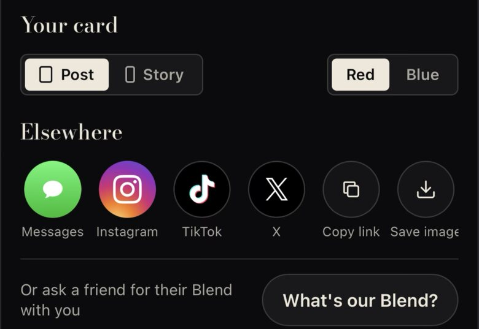
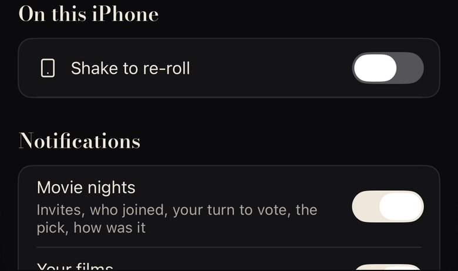
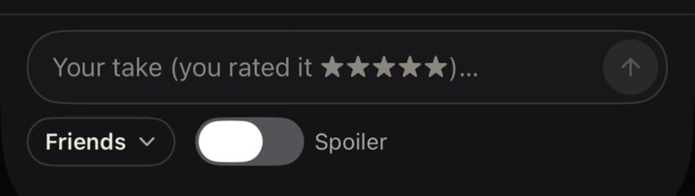

Every system control still on screen, iPhone and web, with the Montage piece that replaces it. Montage origin/main 938282d3. "Now" is the owner's own screenshot where one exists; otherwise it is drawn from the code as shipped and marked "as coded". Already done and not re-mocked: our own sort popover, the logo pull to refresh, the loader overlap fix, and alerts and confirms (ConfirmDrawer, 0 .alert uses).
| Default | iPhone | Web | Montage replacement | |
|---|---|---|---|---|
| Segmented picker (Post · Story) | .pickerStyle(.segmented) PitchShareSheet.swift:102, RoomShareResult.swift:143 | SharePitchSheet.tsx, t/[id]/ShareResult.tsx (.seg) | The stub strip (fix 1) | Mocked 1 |
| Blue segmented capsule elsewhere | SegmentPill ×12: FiltersSheet ×2, GroupSheets, ProfileLibrary, ProfilePeople, ShareCardSheet (Red · Blue), RoomScreen ×2, ActivityDrawer, TagPageScreen, TonightSheet ×2 | .seg: Activity, BlendDna, TagPage, FollowList, SharePitchSheet, ShareResult | The stub strip, changed once in SegmentPill and .seg | Mocked 1 |
| System share sheet entry points | ShareLink ×8 (WelcomeTour ×2, ProfileScreen:705, ShareCardSheet:78, GroupSheets:195/556, FilmContextMenu:38, PostSocial:87); UIActivityViewController ShareCardSheet:242 | navigator.share ×6 (YearReview, BrowseSheet, WelcomeTour, Result, PostSocial, GroupJoin) | Always our share drawer first; the system sheet only behind "More…" | Mocked 2 |
| Date picker ("When did you watch it") | DatePicker(.compact) WatchedWhen.swift:292, 1243, tinted Theme.accent | <input type="date"> DatePickChip.tsx:12 | Today / Yesterday / A while ago chips, then a Montage month drawer | Mocked 3 |
| Toggle (Apple capsule and disc) | Toggle in 3 tints: Controls.swift:143 selectDeep, AccountScreens.swift:353 ink, HandleScreen.swift:150 accent | .pm-switch (round white knob) ×10; checkboxes HideAsk.tsx:29, FilmDiscussion.tsx:429, AccountScreen.tsx:239 | One MontageSwitch (the Settings fix's switch) | Mocked 4 |
System Menu (glass list) | ProfileMoreMenu (ProfileScreen:126, 768), RevealScreen:626, AvatarEditor:145, GroupWatch:501, FilmDiscussion:663 (Friends ▾), TagPageScreen:413, ServicesPicker:161, GroupPhoto:55/62 | <select> region, ProfileMenu.tsx:678 | The sort popover that shipped, reused | Mocked 5 |
Long-press .contextMenu | 12 sites: FilmContextMenu:33 (every poster), FilmDiscussion:555/625, GroupFeed ×4, SocialScreen:579/615, PostSocial:238, RoomChat:125, RateDeckScreen:83 | Web already uses HoldMenu (our drawer) | The web's HoldMenu drawer on the iPhone | Mocked 5 |
| Keyboard accessory "Done" | ToolbarItemGroup(.keyboard) FilmGoal.swift:285 | n/a | A Montage bar: presets plus a cream Done | Mocked 6 |
| Slider | Slider AvatarEditor.swift:78 | type="range" AvatarCropper.tsx:127 | Hairline track, cream square thumb | Mocked 6 |
| Progress bar | ProgressView ImportScreen.swift:311 | n/a | A film strip that fills frame by frame | Mocked 6 |
| Alerts and confirmation dialogs | ConfirmDrawer, 0 .alert | confirm() only in app/dev/summaries (staff page) | Done | Shipped |
| Sort menu, pull to refresh, loader overlap | Our own sort popover, the logo pull to refresh, the single loading line | Done | Shipped | |
| Kept on purpose | photosPicker (AvatarEditor, GroupPhoto), SFSafariViewController (InAppSafari), .sheet detents (the chrome is ours), the keyboard itself, Sign in with Apple | Keep: system trust surfaces | Keep | |
The share drawer is already ours at the top (the card, Bodoni heads). Below it, two system segmented pickers and a row of full-colour brand app icons (green Messages, the Instagram gradient) are the loudest colour on the screen.

Apple's segmented control, cream-tinted. Six full-colour app tiles. On a poster, a profile or a group, ShareLink skips this drawer and opens the system sheet straight away.
Both pickers become the stub strip. The app tiles keep their place but go monochrome: one line glyph in our 50px circle, cream on --panel-2. "Save image" folds into More…, which is the only way to the system sheet. Every ShareLink in the table opens this drawer first.
No icons at all: a programme list like Settings (fix 2). The calmest, but it loses the at-a-glance row people expect from a share screen and is taller.
Log a watch asks Today, Yesterday, A while ago, or a date. The date is Apple's compact DatePicker: a grey pill in system blue that opens Apple's calendar card. The web opens the browser's own date input.
Apple's blue circle, SF Pro numerals and the system glass card: the one screen in Log a watch that is not Montage.
"Pick a date" opens our drawer: Bodoni month with the tick, UI tabular numerals, today underlined in data blue, the chosen day a cream square (the stub's paper), future days greyed. Dots show days you already logged. The CTA names the day, so there is no separate "Log" chip.
The last two weeks as ticket stubs you swipe through (most watches are recent). Older dates still need a month view, so this adds a control rather than removing one.
Today there are three Apple toggle tints on the iPhone (deep blue, cream, data blue) and a round white-knob .pm-switch plus bare checkboxes on the web. The Settings fix (fix 2) already drew the Montage switch; this puts it everywhere.


Settings: Apple's switch tinted cream (on reads as off). Discussion: Apple's switch, off, next to a system Menu "Friends ▾".
One switch: the card's corner (7), a square knob, --select-deep track and cream knob when on, --faint knob on --panel-2 when off. A compact 34×20 for inline rows (Spoiler, Show logs). Web checkboxes become the switch, or this cream check square where it is a one-off "Don't ask again". Toggle gets a MontageToggleStyle, so the 9 call sites keep their code.
Nine system Menus (profile •••, the reveal's ⋯, photo, a group list's •••, Friends ▾) and twelve .contextMenus (every poster's long-press) still show Apple's glass list and the blurred lift. The web already has our HoldMenu drawer, and Sort now has our popover.
Glass, SF Pro 17, system red, Apple's lift-and-blur. The same ••• is our popover on Sort and our drawer on the web.
The sort popover that shipped, reused for every short menu (up to five items): --panel, the field's 12 corner, the 4px oxblood offset of a small object, UI 15 rows, danger as text, Lucide glyphs. Friends ▾, the reveal's ⋯ and the photo menu all use it.
Long-press on a poster, a take or a chat message opens the web's HoldMenu drawer instead of Apple's lift: the film's header with its match, then rows. One haptic, no blur. Works for both menus but is heavier for a three-item •••.
Three small Apple pieces: the grey "Done" bar over the number pad on the film goal, the avatar zoom slider, and the import progress bar.
System blue "Done", Apple's white disc thumb, a plain capsule bar.
Keyboard: a --panel bar with the goal presets as chips and a compact cream Done. Slider: a hairline cream track, square cream thumb with a small oxblood offset (it is the one object you are moving). Progress: a strip of frames that fill in cream, the film-strip streak's language.
ShareLinks and 6 navigator.shares open our share drawer; the system sheet sits behind "More…". Or B (a text list).DatePicker and <input type="date">). Or B (a strip of day stubs plus a month view)..pm-switches and 3 checkboxes. Yes or no: it is the Settings fix's switch, just used everywhere.SegmentPill instead, which at least gets them off Apple's control.